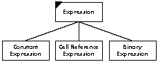

The object-based approach promises to make software easier to reuse, refine, test,
maintain, and extend. But simply implementing an application in an object-based
language does not guarantee these benefits. They can only be achieved if the
implementation is based on a sound object-based design. This article presents a
process for creating such a design.
As every programmer knows, software applications are becoming increasingly
complex, and as a result, increasingly expensive to build and maintain. The good news
is that if you are willing to spend the time to carefully develop an object-based design
for your software, implementation can proceed smoothly and quickly, and the resulting
software will be relatively easy to reuse, refine, test, maintain, and extend. This
article gives an overview of the object-based approach and then describes step by step
a two-phase process for designing an object-based application.
Programmers familiar with non-object-based languages are used to dividing
information into two distinct kinds: functions and data. Procedural programming,
based on this division of information, focuses on how to accomplish the goals of the
program. It begins by identifying the high-level tasks that need to be performed, and
then decomposing each task into smaller tasks until the level of the language statement
is reached. Procedural programming concerns itself almost immediately with the
implementation of the program: the steps that compose each function, and the
particulars of the data to be operated upon.
By contrast, the focus of the object-based approach is more abstract. It asks first
about the intention of the program: asking what, not how. It views the programming
process as one of modeling the world. It begins by identifying the things inhabiting the
part of the world being modeled, and the behavior of those things, both as individuals
and with respect to the other things in the world.
The object-based approach uses abstraction to manage the complexity inherent in
real-world problems. An abstraction is a simplified picture of the world, arrived at
by generalizing about details. The object-based approach relies on abstraction
mechanisms such as encapsulation, information hiding, polymorphism, and
inheritance.
ENCAPSULATION
Encapsulation is the enclosing of a number of separate related things within a single
physical or conceptual capsule. For example, a telephone number encapsulates
individual digits at a higher, abstract level at which the numbers form a single entity.
When you think of your telephone number, you don't think of it as seven separate
digits. You think of it as a single unit that happens, almost incidentally, to be composed
of seven digits.
INFORMATION HIDING
Encapsulation makes complexity more manageable, but it doesn't reduce the amount of
visible detail. Information hiding takes encapsulation a step further, reducing
complexity by hiding some or all of the things that have been encapsulated. For
example, when you use a compact disc player, you don't generally think of all the
electrical and mechanical components within it. You don't need to know how it works.
What's important is what it does: it plays the music you want to hear.
OBJECTS
An object is an encapsulation of data and the functions that manipulate that data. But
more than that, an object hides the data and possibly some of the functions, revealing
only those functions that need to be made available to other objects. The set of visible
functions defined by an object is referred to as the behavior of the object.
The data and functions that are hidden within an object define the implementation of
that object. That is, they definehow that object does what it does. The behavior of an
object defineswhat the object does. In keeping with the abstract nature of the
object-based approach, object-based design focuses exclusively on the behavior of
objects. The object-based approach views a program as a collection of objects that
interact with other objects to accomplish the goals of the program. Objects interact
with other objects by sending those objects messages requesting that a publicly visible
function be executed. A message specifies the name of the function being requested and
the arguments required by the receiver of the message to execute the function.
POLYMORPHISM
Polymorphism is an abstraction mechanism by which two or more different kinds of
objects can respond to the same message, each in its own way. This means that an
object can send a message to another without knowing how the receiver will respond,
or what other messages the receiver might also understand. The sending object just
needs to know that many different kinds of objects can be defined to respond to the
message being sent and that the receiver is one of those.
CLASSES
A class is a specification of the behavior of an arbitrary number of similar objects.
Objects that share the same behavior are said to belong to the same class. The objects
that belong to a class are referred to as instances of that class. The process of
dynamically creating objects is known as instantiating a class.
Classes are another abstraction mechanism. They allow us to focus on the kinds of
objects in an application rather than on the individual objects.
Throughout the remainder of this article, when we refer to some aspect of a class, we
mean the definition of that aspect of the instances of the class. For example, when we
refer to the behavior of a class, we mean the definition of the behavior of the instances
of that class. The meaning should be clear from context.
INHERITANCE
Inheritance is an abstraction mechanism by which new classes can be derived from
existing ones, thereby "inheriting" both data and functions. The inheritor (called a
subclass) reuses the code that it inherits from its superclass. Again, in the design
phase, we are only interested in the inheritance of behavior.
THE CLIENT-SERVER MODEL
The model we use for our object-based design views the world as a system of objects
collaborating to perform the work required of them: the client-server model.
The client-server model is a description of the interaction between two entities: the
client and the server. A client makes requests of the server to perform services. A
server provides a set of services upon request.
The ways in which the client can interact with the server are described by a contract:
a description of the requests that can be made of the server by the client. Both must
fulfill the contract: the client by making only those requests it specifies, and the
server by correctly responding to those requests.
In an object-based design, both client and server are objects. Any object can act as
either a client or a server at any given time. The design focuses on the contract
between clients and servers by asking (1) what actions each object is responsible for,
and (2) what information each object shares.
If you spend a meaningful amount of time on carefully developing an object-based
design for your software, implementation can proceed more smoothly and quickly than
it would for a traditional procedural program. The resulting software can also be
easier to test, maintain, refine, and extend.
An object-based design can improve implementation by encapsulating pieces of the
program into components that can be implemented without considering the interactions
with the rest of the system. If an interface between components then seems wrong for
some reason, the system can be changed at just that one point; other parts of the
system are not affected.
A careful design can also make it easier to test the application. Classes can be isolated
and tested one at a time. An error can more easily be traced to a specific class. Classes
can be shown to function before being plugged into the rest of the system.
Similarly, the rigorous specification of the interfaces between classes allows testers
to more easily spot discrepancies between the output of one component and the input
required toanother. Such a careful specification of the interfaces requires a complete
understanding of the responsibilities of each component. Holes in the system--places
where a responsibility was omitted by the specification, or stated ambiguously, or
made part of the wrong class--can more easily be spotted and filled.
After the application has been implemented, it's also easier to maintain. Encapsulation
and information hiding rigidly constrain the patterns of communication within the
application, so that they can be understood more easily. This makes it easier to
determine where a problem lies and where any ramifications may appear after you fix
the problem. In this way, you can guard against the notorious problem of one bug fix
introducing other bugs.
A system that can be understood can also be refined and extended. If the interfaces
between classes have been rigorously controlled, new portions of the system can be
created to use the same interfaces, but to do different things with them. You can also
add new classes that respond to old requests in ways appropriate to the new system of
which they are now a part. Functionality can thereby be increased at far less cost.
In sum, object-based design enables us to build classes that can be depended upon to
behave in certain ways, and to know what state results from that behavior. Such
classes can be reused in every application that can make use of this behavior and
knowledge. With careful thought, you can construct classes that will be useful to many
applications.
The remainder of this article describes a process for creating object-based designs.
The result of this process, an object-based design, consists of a structure of classes
modeling the problem, a description of the public behavior of those classes--their
responsibilities, and a description of the patterns of communication among the classes.
The design process we use has two phases:
Both of these phases play critical roles in the object-based design process.
The exploratory phase of object-based design concentrates on identifying the classes,
assigning responsibilities to those classes, and determining which other classes
collaborate with them to fulfill those responsibilities. At this stage of the engineering
process, very little effort has been invested in any specific design. It is therefore
relatively cheap to play with the possibilities, trying out various ways to configure
your system. A little time spent exploring at this point can lead to a lot of time and
effort saved later, as it will be easier to reuse parts of the design, or to refine and
extend it.
The results of exploration, however, must be carefully pruned and edited. No one can
count on getting it right the first time. The preliminary design must be critically
examined, to maximize both encapsulation and inheritance. Only in this way can the
use of object-based design fulfill its promise of producing software that is easy to
reuse, refine, test, maintain, and extend.
To illustrate the design process described here, we'll use the example of a spreadsheet
program, the specification for which appears in the sidebar. This example is too
simple to be a true application, but for the purposes of this article it will give you a
feeling for how to use the design process.THE EXPLORATORY PHASE
The exploratory phase of object-based design consists of three steps:
Let's look at each of these steps individually.
FINDING CLASSES
Choosing the classes of objects that make up your application is a key part of modeling
it. The classes should define the essence of your application; they should emphasize the
important aspects, and discard irrelevancies.
Generate candidate classes. When you start your design, you frequently have
nothing more than a specification outlining the functionality envisioned for the system
as a whole. If that's all you have, that's what you start with. Begin by reading the
specification until you are familiar with it. Now reread the specification, taking note
of every noun or noun phrase in the document. These are your candidate classes.
The following list results from doing this with the spreadsheet specification:
| spreadsheet program | decimal point | formula |
| application | monetary format | expression |
| user | dollar sign | simple expression |
| electronic spreadsheet | real format | additive operator |
| new spreadsheet | scientific format | term |
| existing spreadsheet | zero | multiplicative operator |
| files | one | factor |
| spreadsheet | exponent | constant |
| cell | text cell | cell name |
| row | arbitrary text | number |
| column | first character | argument |
| name | equal sign | comma operator |
| ordinal position | text | textual representation |
| value | left-aligned text | type |
| numeric cell | centered text | rectangular group of cells |
| numeric value | right-aligned text | individual cell |
| format | justified text | entire spreadsheet |
| integer format | expression cell | selected cell |
Choose classes from candidates. Once you have a list of possible classes, you
must decide which of them will become part of the model you are designing. The
following guidelines are useful in choosing which noun phrases represent classes and
which are spurious.
For example, "application" really means "the spreadsheet program" in this
context. The phrase that best describes the meaning is kept, while the rest are
discarded. In some cases, none of the phases is appropriate, so a new one must
be created.
Our list is full of such synonyms and naming problems. Following is a list of
the words with synonyms. The words that remain candidates are followed by
the synonyms we have rejected, indented below them.
spreadsheet electronic spreadsheet new spreadsheet existing spreadsheet
entire spreadsheet cell numeric cell text cell expression cell name cell name
value numeric value text arbitrary text textual representation cell group
rectangular group of cells individual cell selected cells
In addition, one more naming problem exists. Rows and columns are just
rectangular groups of cells. The general concept capturing this commonality
is "cell group."
How should formats be represented? The format controls the way in which the value
is displayed. This kind of control is usually handled by either sending different
messages to a class, or sending the same message to different classes. The former is
preferred in this case because the format can change independent of the value. The
format, therefore, should be the message with which the value is displayed (or an
encoding of it if the target language does not support messages as objects). We can
therefore discard all of the noun phrases representing types of formats, which were
the following:
| integer format | scientific format | right-aligned text |
| monetary format | left-aligned text | expression |
| real format | centered text | justified text |
We replace the phrases describing the syntactic representation of expressions, given
below, with classes representing the semantic structure of expressions.
| formula | simple expression | multiplicative operator |
| expression | additive operator | factor |
| comma operator | term | constant |
Record classes. When you have identified the first, tentative list of classes, they
need to be recorded. For each class, take a 4" x 6" index card, and write the class name
at the top of the card. You should use index cards to record classes because they are
compact, easy to manipulate, and easy to modify or discard. Each index card will
eventually contain the kinds of information indicated in Figure 1.
Figure 1. Contents of Each Index Card
Some classes will be missing and others will be eliminated later, but don't worry.
Your design will go through many stages on its way to completion, and you will have
ample opportunity to revise.The final list of candidate classes is as follows:
| Binary Expression | Computed Value | Spreadsheet |
| Cell | Constant Expression | Textual Value |
| Cell Group | Expression | Value |
| Cell Reference | File | |
| Expression | Numeric Value |
ASSIGNING RESPONSIBILITIES
You have now found the classes in your system. Next you must decide what behavior
each of them is going to be responsible for.
Responsibilities include two key items:
Responsibilities are meant to convey a sense of the purpose of a class and its place in
the system. As you seek to identify responsibilities, use the conceptual model of the
client-server contract. The contract between two classes represents the list of
services one class can request of another. A service can be either the performance of
some action or the return of some information. If an object provides a service, that is
one of its responsibilities. All of the services listed in a particular contract are the
responsibilities of the server for that contract.
Find responsibilities. To find responsibilities, return to the specification. This
time, take note of all the verbs. Use your judgment to determine if each represents an
action that some class within the system must perform. Also use the work you just
performed when you identified classes. The fact that you identified a class indicates
that you saw a need for it to fulfill at least one responsibility. The name you chose for
that class probably suggests that responsibility, and possibly others. From the
specification, we can derive the following candidate responsibilities:
open from a file | columns have cells | remove columns |
save to a file | specify cell format | insert rows |
maintain a collection of cells | numbers convert to text | insert columns |
cell have names | users select rectangular | remove values of cells |
groups of cells | ||
cell have values | cut selected cells | replace values of cells |
rows have names | copy selected cells | edit values of cells |
rows have cells | paste cells | recompute values of cells |
columns have names | remove rows |
Assign responsibilities to classes. Once you have listed a number of candidate
responsibilities for the classes in your application, you can go about assigning each
responsibility to the appropriate class. The following guidelines can prove useful as
you seek to apportion the responsibilities to each class.
We now assign the responsibilities from the spreadsheet program.
open from a file
save to a file
It isn't clear which class to assign these responsibilities to. The closest candidate we
have now is Spreadsheet itself, but it should be used to represent just the spreadsheet,
not the full set of editing capabilities implied by the system. We therefore want a class
that represents the application itself. Let's call this class Spreadsheet Editor, and
assign these responsibilities to it.
maintain a collection of cells
This is clearly a responsibility of the class Spreadsheet. After all, that is the class that
must maintain the collection; therefore, it should have the responsibility for
maintaining the information as well.
cells have names
cells have values
By the same token, the responsibility for maintaining this information belongs to the
class Cell.
rows have cells
columns have cells
The responsibility for maintaining this information belongs to the class Cell Group.
However, because rows and columns are merely different groupings of cells, we might
wish to rephrase this responsibility more generally, stating that the class Cell Group
knows which cells it contains.
At this point, we might notice that the responsibilities of Spreadsheet and the
responsibilities of Cell Group are very similar; they both maintain information about
the cells they contain. We should view Spreadsheet as being composed of a group of
cells, rather than maintaining a collection of individual cells. The responsibility of the
class Spreadsheet is to know the group of cells of which it is composed. The
responsibility of the clas Cell Group need not change.
rows have names
columns have names
Names of rows and columns appear merely by way of explaining how cells get named.
Cells must maintain their names, as we mentioned above, but row and column names
are irrelevant, and do not need to be maintained by any class. There is no
responsibility for maintaining this information.
specify cell forma
This is actually a compound responsibility. The Spreadsheet Editor allows the user to
specify the cell format, but the Cell must maintain its format thereafter.
numbers convert to text
The responsibility for performing this conversion belongs to the class Numeric Value.
users select rectangular groups of cells
cut selected cells
copy selected cells
paste cells
remove rows
remove columns
insert rows
insert columns
remove values of cells
replace values of cells
edit values of cells
The responsibility for receiving user input belongs to the class Spreadsheet Editor.
Many of these responsibilities imply that other classes must perform other operations
as well. We shall return to this point later, when we discuss collaborations.
recompute values of cells
This is also a compound responsibility. The Spreadsheet Editor allows the user to
request that the values be recomputed, but the Expression must perform the actual
computation.
Record responsibilities. As you assign responsibilities to specific classes, record
them on the card for that class, under the class name, on the left edge.
DETERMINING COLLABORATIONS
A collaboration is a request made of one object by another. It is the embodiment of the
requests specified in the client-server contract. A single collaboration flows in one
direction--from the client to the server. Every collaboration is associated with a
single responsibility. It fulfills, or contributes to the fulfillment of, that
responsibility.
Collaborations are important because the pattern of collaborations within your
application reveals how control and information will flow during execution.
Identifying collaborations between classes allows you to identify paths of
communication between classes. Finding such paths will ultimately allow you to
identify subsystems of collaborating classes. Finding such subsystems is one way in
which you will later be able to further abstract your application.
Identify collaborations. To identify collaborations, ask the following questions for
each responsibility of each class:
Let's look at each of the responsibilities assigned to the classes in the spreadsheet
application. In general, responsibilities to maintain information require no
collaborations. Unless they are an exception, we will not discuss such responsibilities.
Expression:
compute values
This generic operation requires no collaborations. However, subclasses of the class
Expression require collaborations in order to fulfill their specific responsibilities, as
described later.
Binary Expression:
compute values
This operation requires a collaboration with the expressions representing the
arguments to the binary operator. These expressions may be a member of any subclass
of the class Expression. We therefore record a collaboration with the class Expression.
Cell Reference Expression:
compute values
This operation requires a collaboration with the cell being referenced, an instance of
the class Cell.
Numeric Value:
convert to text
This operation occurs during the computation of expressions. It requires no
collaborations.
Spreadsheet Editor:
open from a file
save to a file
Clearly, this involves a collaboration with the class File.
allow user to specify cell format
This responsibility involves a collaboration with the class Cell so that the format will
be remembered.
users select rectangular groups of cells
cut selected cells
copy selected cells
paste cells
remove rows
remove columns
insert rows
insert columns
remove values of cells
replace values of cells
edit values of cells
allow user to request to recompute values of cells
The Spreadsheet Editor is responsible for interpreting user input. It must then inform
the spreadsheet that it has changed, requiring a collaboration with the class
Spreadsheet. Responsibilities that alter cells or groups of cells must similarly
collaborate with the classes Cell or Cell Group.
Record collaborations. Record these classes as collaborations on the card for that
class directly opposite the responsibility the collaboration supports. Check to see that
a corresponding responsibility exists for every collaboration you record. Remember,
however, that a collaboration might be with a subclass, but the responsibility might
be recorded on the superclass card instead.
Design walk-throughs. As you make these design decisions, it's important for you
to be able to determine their implications. For this purpose, you should walk through
your system after each step. Choose a set of typical inputs to your system, and
hand-simulate its behavior, given these inputs. In this way, you can more easily
determine the implications of your decisions. Feel free to revise previous decisions as
you go, and walk through your new configuration. The point of this stage of your design
process is, after all, to explore as many different possibilities as seems reasonable.
Walk-throughs can help you determine the implications of these various possibilities.
Let's look at what happens when a cell is asked for its value. Cells maintain their
values indirectly bystoring an instance of a subclass of class Value. Therefore, cells
must retrieve their values when requested by sending a message to a Value. The Value
may represent the value directly, as with a number or text, or it may know the
expression by which the value can be computed. In the latter case, the Value must ask
the expression to evaluate itself.
Expressions evaluate themselves differently depending on which type of expression
they are. Constant Expressions evaluate themselves by returning the constant they
represent. Cell Reference Expressions evaluate themselves by asking for the value of
the cell they reference. Binary Expressions evaluate themselves by applying their
operator to the values of their two arguments. So far, it seems the sys- tem works the
way it was intended to.
THE ANALYSIS PHASE The analysis phase of object-based design also consists of
three steps:
Let's look at each of these steps individually.
BUILDING HIERARCHIES
A carefully considered and crafted inheritance hierarchy provides the maximum
amount of reusable code. Carefully assigning responsibilities ensures that the
resulting hierarchies of classes are easily reused, maintained, and extended.
Record existing hierarchies. First, examine the present class hierarchies in the
design. Draw hierarchy graphs of your application. The hierarchy graph is rather
simple. Classes are represented by rectangles, labeled with the class names.
Inheritance is indicated by a line from superclass to subclass, and by position on the
page--superclasses are above their subclasses.
Analyze the responsibilities assigned to each class to determine whether each class is
abstract or concrete.
Go through your inheritance hierarchies, labeling each class as abstract or concrete on
the cards and by filling in the upper-left corner of hierarchy graphs for abstract
classes. If you have trouble deciding whether a given class is abstract or concrete,
think about your working system. Will an instance of this class be used during
execution? If so, the class is concrete.
Our spreadsheet program includes two abstract classes: Expression and Value. All
other classes in this design are concrete. The hierarchy graphs for hierarchies
containing more than one class appear as shown in Figure 2.

Figure 2. Hierarchy Graphs for Our Abstract Classes
Restructure hierarchies. Because our spreadsheet example is so small, there is
nothing we can show you here to exemplify optimizing the hierarchy. Nevertheless,
the following guidelines can help you build better hierarchies:
When you have modified your design, redo your graphs and cards to correspond to the
new state of your design. Then recheck your system. For each responsibility, make
sure there is a corresponding collaboration, and vice versa. Once again, walk through
the design to ensure that every object is still communicating with the rest of the
system in the appropriate manner.
Group responsibilities into contracts. Once the responsibilities have been
properly factored in the hierarchies, they need to be grouped into the contracts
supported by each class. This is usually straightforward because classes usually
support a small and cohesive set of responsibilities. If the responsibilities of a class
are not cohesive, it should have more than one contract. Not all responsibilities will be
public behavior for the class. Only public behavior should be grouped into contracts.
Number the contracts so that they can be referenced.
Here are the contracts for the classes in the spreadsheet design:
Cell 1. Maintain the value and format 2. Compute the value
Cell Group 3. Know the cells contained in the group
Expression 4. Compute the value of the expression
File 5. Input and output to disk
Spreadsheet 6. Know the group of cells within it
Value 7. Compute the value represented
STREAMLINING COLLABORATIONS
We are now going to streamline the collaborations between classes--each
communication path that can occur as information and execution flows through the
system. We analyze these collaborations to attain an overall perspective, to identify
natural ways to divide responsibilities between groups of classes, and thereby to
simplify the various ways in which communication can flow. Simplifying the potential
communication flow simplifies the application: the application becomes easier for
others to understand, maintain, reuse, refine, and extend.
Earlier, we discussed performing a walk-through of your system, trying out various
scenarios, simu- lating the results of various typical inputs. Each such scenario
brings to light one possible path along which information and control can flow.
To do a good job of analyzing collaborations between objects, you must first collect an
exhaustive description of all the paths along which control and information can flow.
You can then analyze the col - laborations between classes in order to simplify them.
A collaborations graph is a tool for accomplishing this analysis. A collaborations graph
allows you to examine the collaborations between classes in graphical form, so that
you can better identify areas of unnecessary complexity or other design flaws.
Collaborations graphs represent four distinct elements: classes, subsystems,
contracts, and collaborations.
Classes are shown as labeled rectangles. Subsystems are shown by drawing a rounded
rectangle around the classes that comprise them. Contracts are shown as small
semicircles inside the edges of the class or subsystem to which they belong. Draw one
semicircle per contract, labeled by the contract number. Collaborations between
classes or subsystems are represented by an arrow from the client to a contract
supported by the server. If two objects both collaborate with a class by means of the
samecontract, draw the arrows to the same semicircle. Otherwise, draw the arrows to
different semicircles.
In addition, collaborations graphs show superclass/subclass relationships, such as
that between the class Value and the specific kinds of values, or between Expression
and the different kinds of expressions. A superclass represents the contracts supported
by all of its subclasses; because of polymorphism, we can focus on the abstract
contract. We need not consider whether the superclass, or one of its subclasses, will
be the object actually providing the service during execution. This is represented in
the collaborations graph by nesting subclasses within the bounds of their superclasses.
Figure 3 shows the collaborations graph of the spreadsheet application as we have so
far designed it.
Figure 3. Initial Collaborations Graph for Our Spreadsheet Program
The goal of this step in the design process is to simplify the patterns of collaboration.
Without such simplification, the communication paths could flow from nearly any
class to any other, with only the slenderest of justifications and no coherent
structuring. Such anarchic flow leads to spaghetti code-- the same problem that
eliminating "go to" statements was designed to avoid.
Because such applications are impossible to maintain or sensibly modify, we aim to
simplify the patterns of collaboration. Successfully doing so translates into a
simplification of the graph. The technique we will use, at least in part, is to work
backward: we shall simplify the graph in order to simplify the collaborations. What
criteria should you use to accomplish this simplification?
Three basic mechanisms can be used to simplify your graph, and hence to streamline
the collabora- tions between your classes and subsystems.
Our spreadsheet application can be cleanly divided into two large pieces: the editing
capabilities and the structure being edited. For this reason, it makes sense to create a
subsystem representing the structure of a spreadsheet, which we will call the
Spreadsheet Subsystem. The Spreadsheet Subsystem is responsible for creating
spreadsheets, and maintaining their structure.
It may well be that the Spreadsheet Editor is itself really a subsystem rather than a
single class, but in the interests of simplicity let's presume that it is a class.
Having created the Spreadsheet Subsystem, we need to clean up the way in which the
Spreadsheet Editor collaborates with it. In particular, the Spreadsheet Editor should
not collaborate with so many of the classes inside the subsystem. We can simplify the
paths of collabora- tion by forcing all accesses to other classes to go through the
Spreadsheet. This implies that Spreadsheets must be able to understand and pass along
all messages to the cells or cell groups that compose them. Spreadsheets therefore now
collaborate with Cell Groups, which in turn collaborate with Cells. Two new
collaborations therefore appear in the graph.
This set of changes results in the graph of the application shown in Figure 4.
Figure 4. Simplified Collaborations Graph for Our Spreadsheet
Program
The collaborations within the Spreadsheet Subsystem would then look like Figure 5.
Figure 5. Collaborations Graph for the Spreadhseet Subsystem
DEFINING SIGNATURES
Once the responsibilities have been assigned to classes, and changes are unlikely, the
final stage of the design process is to refine the responsibilities into protocols. A
protocol is a set of messages to which an object will respond.
The goal of this part of the process is to make the classes in your application,
particularly their instances, as generally useful as possible. This is accomplished in
two ways:
First, define the most general message, one that allows clients to supply all possibly
required parameters. Next, provide reasonable default behavior for as many
parameters as possible. Finally, analyze how each client uses (or is likely in the
future to use) this general message. From that analysis, define a useful set of messages
that allows clients to specify only some of the parameters, while relying on the
defaults for the others.
List the contracts of each class or subsystem in your application, and turn each
contract into a set of signatures. Each contract will have one or several messages
associated with it. Name these messages thoughtfully, bearing in mind the
considerations just described. Along with the message names, specify the types of all
arguments required, and the type of object returned by the method, if any. Here is an
example set of signatures for the class Spreadsheet:
Class: Spreadsheet 6. Know the group of cells within it
cells() returns Cell Group
cells(Cell Group) returns void
row(Integer) returns Cell Group
column(Integer) returns Cell Group
rows(Integer, Integer) returns Cell Group
columns(Integer, Integer) returns Cell Group
rowsAndColumns(Integer, Integer, Integer, Integer) returns Cell Group
positionOfCell(Cell) returns String
cellAt(Integer, Integer) returns Cell
cellNamed(String) returns Cell
You are now ready to write a formal specification for each class. The specification will
state the name of the class and its overall purpose, whether it is abstract or concrete,
its position in its inheritance hierarchy and the collaborations graph, and its contracts
and their associated signatures. Each signature should be followed by a description of
the behavior captured by the signature. In addition, include any notes on special
implementation considerations, such as algorithms, behavioral constraints, or error
conditions.
As a result of this design process, you now have one or more collaborations graphs, one
or more hierarchy graphs, a specification for each class, and a set of formal
contracts for each class.
You are now ready to implement your application.
The result of this process is a design based on objects. The responsibilities of each
object become messages to which the object will respond by providing the services
requested. Collaborations represent classes from which an object must request
operations or information in order to fulfill its own responsibilities.
The design therefore supports the basic concepts of object-based technology--it
encapsulates operations and information within objects, it hides details of the state of
an object, and it uses inheritance to incrementally refine the definitions of objects,
maximizing the amount of reusable code.
Classes and subsystems can be tested before they are connected to the entire
application. Because the paths of communication are mapped out and rigorously
controlled, maintenance can be performed without risking unpredictable side-effects.
Finally, because the software has been designed from the start with future extensions
in mind, functionality can be added to the application with a minimum of difficulty.
Applications implemented from such a design can therefore reap the benefits of
object-based technology.
The spreadsheet program is an application that allows users to create and edit
electronic spreadsheets.
Users can create new spreadsheets. Existing spreadsheets can be opened from and saved
to files.
The Spreadsheet
A spreadsheet is a collection of cells arranged in rows and columns.
Rows and columns consist of cells and have names. The name of a column is the letter C
followed by the ordinal position of that column. The name of a row is the letter R
followed by the ordinal position of thatrow.
Each cell has a name and a value. The name of a cell is the concatenation of the name of
the cell's column and the name of the cell's row, in either order.
There are three different types of cells: numeric, text, and expression.
Numeric cells contain numeric values. The user can specify the format in which the
value of a numeric cell is displayed. There are four different formats:
Text cells contain arbitrary text, except that the first character cannot be an equal
sign. The text can be formatted to be left aligned, centered, right aligned, or fully
justified.
Expression cells contain a formula, but display the value of the formula. Formulas are
entered as text, using the syntax defined by the following syntax definition:
<formula> ::= '=' <expression>
<expression> ::= [<expression> ','] <simple expression>
<simple expression> ::=
[<simple expression> <additive operator>] <term>
<term> ::= [<term> <multiplicative operator>] <factor>
<factor> ::= <constant> | <cell name> | '(' <expression> ')'
<constant> ::= <number> | <text>
<additive operator> ::= '+' | '-'
<multiplicative operator> ::= '*' | '/'
Arguments to additive and multiplicative operators must be numeric. The result is a
number. Arguments to the comma operator (text concatenation) may be either text or
numbers, the numbers being converted to a textual representation in the latter case.
The result is text.
The value of an expression cell can be formatted either as numeric cells or text cells,
depending on the type of the result.
Operations
Users must be able to select rectangular groups of cells, from individual cells to the
entire spreadsheet, including rows and columns. Selected cells can be cut, copied, and
pasted. At least one cell must be selected at all times.
If one or more complete rows or columns are selected and cut, the rows or columns are
removed from the spreadsheet. If one or more rows or columns are pasted, they are
inserted to the left of or above the topmost selected row or column, respectively.
If a portion of some rows and columns is cut, the values in those cells are removed, but
the empty cells remain. If such a portion is pasted, the values of the same shape of
cells are replaced with the values of the cells, with the upper leftmost cell in the paste
buffer being aligned with the upper leftmost cell of the selected cells.
Users must have the ability to edit the values in individual cells, and to force
recomputation of the values shown in expression cells.
BRIAN WILKERSON is an object-oriented systems specialist for Instantiations,
Inc., a consulting firm in Portland, Oregon. He studied computer science at the
University of Alberta. After receiving his degree, he worked for Tektronix prior to
joining his current company. Brian has developed a course about object-oriented
design at Instantiations, and has also co-authored a book entitled Designing
Object-Oriented Software, to be published this spring by Prentice-Hall. When he's
not writing or working, he enjoys day hiking and attending jazz concerts. *